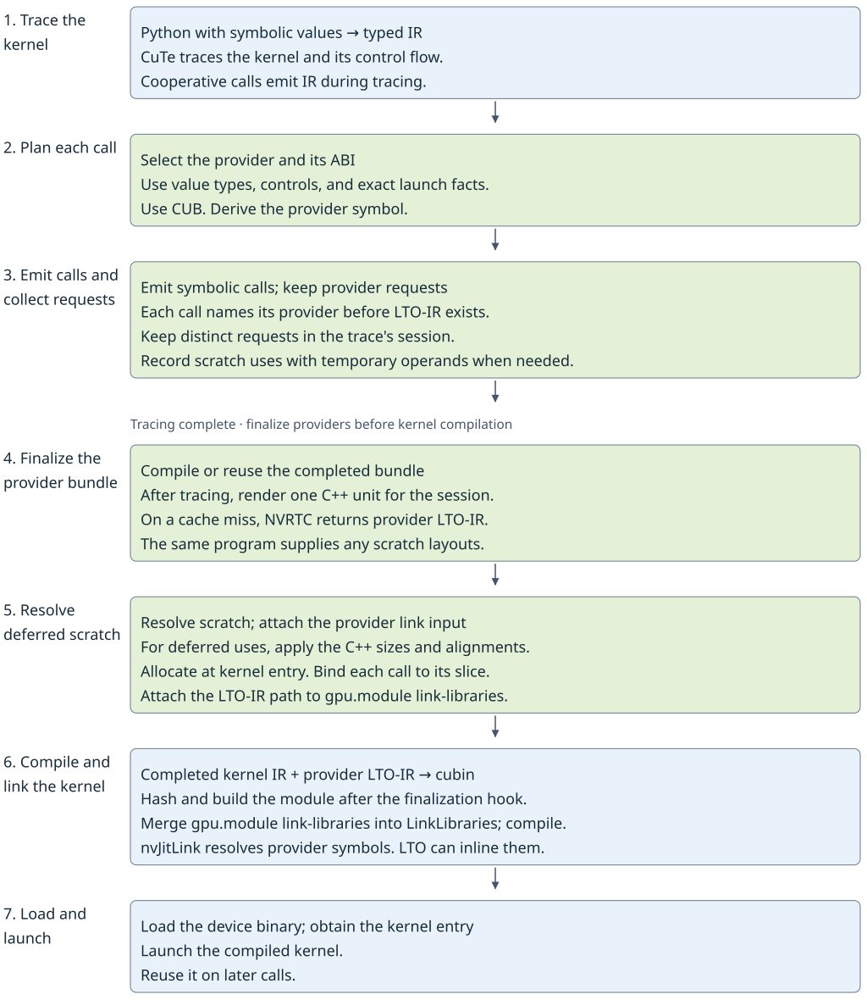
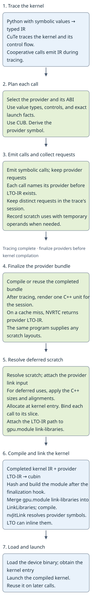
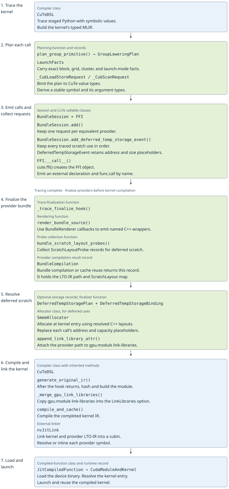
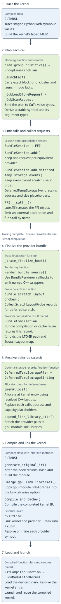
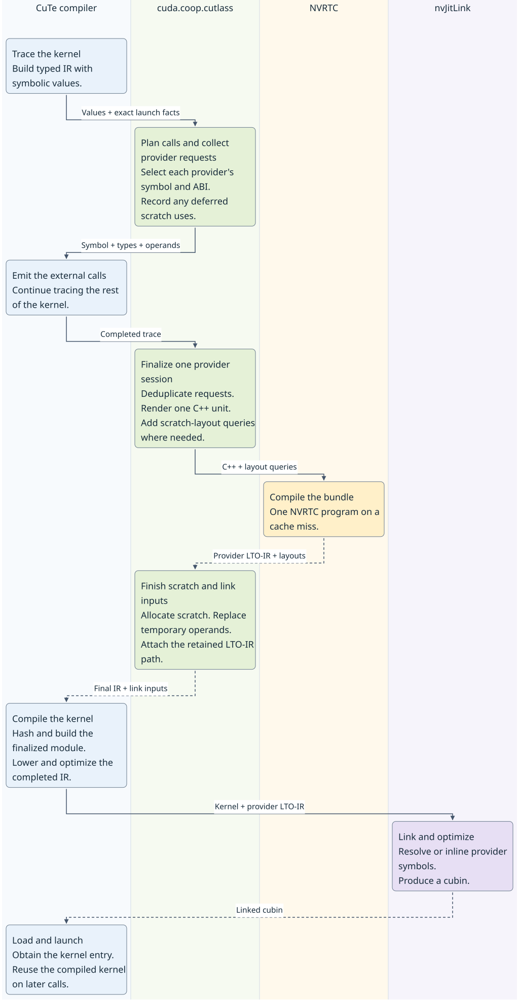
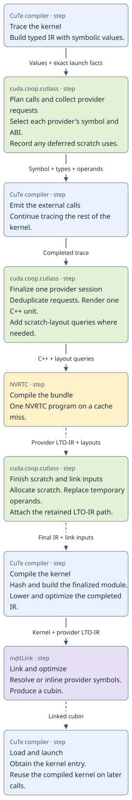
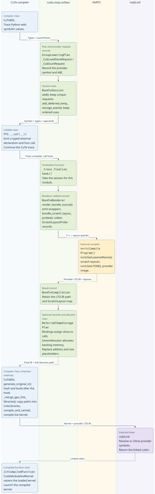
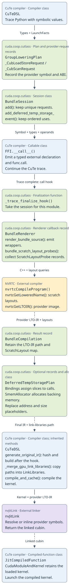

Developer Guide#
CuTe compiles your kernel and its control flow. For each cooperative
primitive, cuda.coop.cutlass generates a C++ device function that calls
CUB. NVRTC compiles those functions to LTO-IR, which CuTe links into
the kernel before it runs. The implementation calls these generated
functions providers.
During tracing, CuTe runs the kernel’s Python code with symbolic values and builds its intermediate representation (IR). A cooperative call at this stage adds device instructions to that representation; the GPU runs them later. Lowering adapts the call and its values to the generated provider’s argument and result types. A provider request records which C++ function is needed, and a session collects those requests for one trace.
The overview introduces groups, per-thread items, and the public import. The Programming Guide covers writing kernels and choosing operation controls. Here, an executable prefix-sum example shows how a call becomes a compiled device function and where to look when changing the implementation.
For a hands-on tour, follow the Debugger Walkthrough. It uses a 128-thread tile copy to show import, planning, code generation, linking, and repeated execution.
If CUTLASS and its CuTe DSL are new to you, read Introduction to CUTLASS for cuda.coop Developers
first. It explains how the DSL traces a kernel, how that differs from
Dynamo, Numba, and Triton, and which DSL facilities this package relies on.
For the CuTe integration mechanisms alone, without the package’s
abstractions, see Minimal CuTe DSL Integration Example. It calls
cub::BlockReduce from a CuTe kernel in one file and lists the questions
open for CUTLASS reviewers.
Following a prefix sum#
The executable Scan example launches one (8, 4, 2) block. By default,
each of its 64 threads owns two items, for a tile of 128 integers. The host entry point checks the following kernel against NumPy:
@cute.kernel
def scan_tiles(
source: cute.Pointer,
destination: cute.Pointer,
items_per_thread: cutlass.Constexpr,
):
group = coop.this_block()
storage = coop.TempStorage(
sharing="shared", alignment=64, auto_sync=True
)
payload = coop.load(
group,
source,
items_per_thread=items_per_thread,
algorithm="transpose",
temp_storage=storage,
)
scanned = coop.exclusive_scan(
group, payload, initial_value=7, temp_storage=storage
)
# Scan returns a new payload. The input retains its original values.
coop.store(
group,
destination,
scanned,
algorithm="transpose",
temp_storage=storage,
)
@cute.jit
def launch(
source: cute.Pointer,
destination: cute.Pointer,
items_per_thread: cutlass.Constexpr,
):
scan_tiles(source, destination, items_per_thread).launch(
grid=1, block=_BLOCK
)
Load fills payload with consecutive input values. Scan returns a new
payload whose item at position i is seven plus the sum of all inputs
before i in blocked order. Input [0, 1, 2, 3, ...] therefore produces
[7, 7, 8, 10, ...]. Store writes those prefixes to the destination.
Every thread calls all three primitives. They reuse one TempStorage
descriptor, with auto_sync=True synchronizing scratch reuse.
The complete example includes
allocation, launch, cleanup, and an independent NumPy result check. From the
repository root, run it in the compatible environment described in the
programming guide:
python python/cuda_coop_cutlass/examples/scan.py
CuTe owns the @cute.kernel and @cute.jit functions, their Python
control flow, and the launch. Each primitive is a device call inside the
same kernel.
Compiler requirements#
The CuTe compiler must support external NVIDIA LTO-IR linking and
trace-finalization hooks that run after tracing and before module hashing.
It must provide access to the active compiler environment, exact block, grid,
and cluster dimensions, and launch flags.
_compiler/_runtime.py checks for the required Python interfaces
during compiler initialization. Compilation and execution tests check that the
interfaces work together with NVRTC and the final linker.
Compiler phases and handoffs#
Read each figure from top to bottom. These steps run on the host. CuTe traces the Python kernel with symbolic values. It compiles and links the result before the GPU executes it.
The phase map shows where cooperative calls enter this process. Select Python classes to see the classes, data records, and module functions that implement each step. Function labels include parentheses; a data record carries information between steps.


Tracing records calls. Finalization supplies their definitions and completes deferred scratch allocations.#


Tracing records calls. Finalization supplies their definitions and completes deferred scratch allocations.#


Classes and records describe ownership and data. Module functions perform much of the compilation work.#


Classes and records describe ownership and data. Module functions perform much of the compilation work.#
Each cooperative call is planned as CuTe traces it. The lowering already
has the operand types and exact launch facts needed to select its provider.
It adds a request to BundleSession, then emits a symbolic call. CuTe’s
end-of-trace hook runs after these requests have been collected and before
device linking.
The next figure expands this boundary. It shows a nonempty session on a provider-cache miss, with deferred scratch. NVRTC compiles the provider bundle; CuTe compiles the enclosing kernel and arranges the final link. The figures show the device-LTO path that produces a cubin. CuTe supplies kernel LTO-IR and provider LTO-IR to nvJitLink.


The bundle and layout queries share one NVRTC program. The final device link is a later step.#


The bundle and layout queries share one NVRTC program. The final device link is a later step.#


The finalizer supplies an artifact path and completes scratch operands. It does not launch the kernel.#


The finalizer supplies an artifact path and completes scratch operands. It does not launch the kernel.#
Equivalent provider requests share one generated wrapper. Scratch events retain each traced use, because separate uses can need separate slices. A valid cache entry supplies both the LTO-IR and the queried layouts, so that path does not call NVRTC. A session with no providers needs no bundle. Separate trace modules keep separate sessions. A trace module can contain several kernels; deferred scratch is allocated separately for each kernel.
Calls before compiled provider code exists#
A provider request determines a symbol name and an argument/result contract
before NVRTC runs. The renderer uses that name for the C++ definition.
The lowering uses the same name and contract to emit cute.ffi calls.
This step needs a symbol, not a loaded device address.
At finalization, _trace_finalize_hook() attaches the compiled bundle to
the GPU module’s link-libraries attribute. CuTe computes its module hash
after the hook returns, builds the module, then checks its compile cache.
The device linker resolves the call against its definition and can optimize
it with the kernel.
The provider can be inlined, so it need not remain a separate function in
the final cubin. Loading that cubin makes the kernel available to launch.
Scratch addresses follow a separate path. During tracing, calls that need deferred scratch use placeholder address and size operands. NVRTC supplies the exact C++ size and alignment. The finalizer inserts shared-memory allocations and replaces those operands before device compilation finishes. It does not replace a placeholder provider function pointer.
What to inspect at each boundary#
Object or record |
What it tells you |
|---|---|
|
Selected implementation, participation, result, storage, and synchronization requirements for one cooperative call. |
Provider request, such as |
Plan plus the CuTe types and ABI choices needed to render a wrapper and emit its matching call. |
|
Unique provider requests and ordered scratch events for one trace module. A snapshot restores this bookkeeping after failed emission; it does not undo emitted IR. |
|
Path to provider LTO-IR and exact C++ layouts indexed by requirement. A cache hit and a fresh compilation return the same kind of result. |
|
Allocation size, alignment, and per-use bindings. Materialization inserts allocations and replaces each use’s address and size. |
Compiler integration#
Importing cuda.coop.cutlass checks the CuTe runtime through
_compiler/_runtime.py. A cooperative call reads the active CuTe compiler
environment and emits into the enclosing kernel trace. Import itself does
not compile a kernel.
The private _compiler modules own trace sessions, provider bundles,
launch facts, finalization, cache artifacts, and deferred storage. The
_planning modules select CUB specializations and their participation,
result, storage, and synchronization contracts. The _headers package
resolves the configured source tree or installed header bundle and toolkit.
Primitive families#
A family groups related primitives and their implementation. Scan
includes scan, inclusive_scan, exclusive_scan, inclusive_sum,
and exclusive_sum. Its public entry points and type declarations live in
_group_scan.py and _group_scan.pyi; planning lives in
_planning/group/scan.py and CuTe adaptation in _lowering/_scan.py.
Paths in this guide are relative to
python/cuda_coop_cutlass/cuda/coop/cutlass unless stated otherwise.
Planning the CUB call#
For Load, _group_load_store.py first validates the group, payload,
and controls. It classifies a control as omitted, a compile-time constant,
or a runtime value. The lowering then reads the CuTe memory operand’s
element type, or takes the dtype the caller declared for it, and checks
that its layout exposes the contiguous pointer required by CUB.
The planner uses those arguments and the kernel’s launch dimensions to choose a CUB specialization. It also determines which threads must participate and what scratch storage and barriers the call needs. The lowering puts the plan and CuTe scalar type into a provider request, which the renderer uses to generate the wrapper.
In the example, algorithm="transpose" selects CUB Block Load and Store
for a 64-thread block with two integers per thread. Thread rank t owns
tile items 2 * t and 2 * t + 1. Block Scan computes exclusive sums
in that blocked order. The generated wrappers and scratch plans reflect
each primitive’s algorithm, element type, and items per thread.
The renderer generates a device wrapper with an ordinary callable symbol.
CuTe’s cute.ffi emits the call to that symbol. Load uses a result buffer
to return its items, then updates the ThreadData values after the FFI
call is successfully emitted. Store passes the existing items to its
provider. The plan identifies equivalent requests so they can share one
generated function and cached artifact.
Other primitive families use the same approach. For Reduce, the planner
selects CUB BlockReduce or WarpReduce, checks scalar or per-thread payload
support, and records scratch requirements. Block reductions accept an explicit
TempStorage descriptor; warp reductions use compiler-owned storage.
The Reduce lowering generates the wrapper and adapts CuTe’s values to its
arguments. The returned scalar is defined only at group rank zero.
Exact launch facts#
_compiler/_launch.py reads the compiler-provided exact block,
grid, and cluster dimensions and the cooperative/cluster launch flags. The
adapter records their origin in the LaunchFacts object. If a
dimension or flag is unavailable, it stays unknown in that object. Planning
fails if the primitive needs the missing value.
For the prefix sum, block dimensions determine both the CUB specialization
and linear rank: x + block_x * (y + block_y * z). Warp primitives also
need the exact block size to establish complete physical warps and allocate
one scratch slice per group. Cluster primitives need consistent cluster
dimensions and launch mode.
Do not substitute maxntid for exact dimensions: an upper bound does not
prove the number of participating threads. The adapter does not infer
launches from Python frames or a user-maintained launch description.
One provider bundle per trace#
Each trace has a provider session keyed by its compile options and MLIR module. The session deduplicates equivalent requests and records deferred scratch uses. Load, Scan, and Store in the example contribute to the same bundle; finalization compiles the three providers together.
cuda.coop.cutlass registers one persistent trace-finalization hook with CuTe.
The hook runs for every trace on that DSL. It finds the session belonging
to the module being finalized and leaves unrelated or nested sessions alone.
The hook renders the requests into one C++ translation unit, compiles it
to NVIDIA LTO-IR, and attaches the artifact to each gpu.module in the
trace through its link-libraries attribute. The CuTe compiler and final linker then resolve
the cute.ffi calls while compiling the enclosing kernel.
Header and toolkit discovery use the helpers under _headers.
The compiler libraries for the selected toolkit are loaded before importing
the NVRTC bindings, and the loaded NVRTC version is checked against that
selection. A mismatch reports an error before provider compilation. The
final linker must also accept the generated LTO-IR; successful NVRTC
compilation alone does not establish that compatibility.
The cache identity includes the rendered source, header identity, compiler options, architecture, and resolved toolkit/compiler information. Cache loads validate the artifact and any recorded scratch layouts. Cache writes use a lock and atomic replacement. The LTO-IR file remains available until the final linker has read it. Finalization removes stale managed library paths from persistent compiler options so the next trace cannot link an earlier bundle by mistake.
Failed emission restores the queued requests and pending scratch uses saved in the provider-session snapshot. It does not undo emitted IR or payload changes. Finalization removes only its own session. Lifecycle tests exercise failed compilation or linking followed by a successful retry, as well as repeated and nested compilation. These checks matter because one Python process can compile many kernels through the same CuTe DSL.
Scratch allocation after tracing#
Direct, striped, and vectorized Load/Store do not use scratch. Their provider
ABI omits a storage pointer, and passing a TempStorage descriptor does
not add a reuse barrier or change the storage-free provider’s identity.
Calls with deferred scratch record its use while tracing. The finalizer
adds sizeof and alignof probes to the same NVRTC program as the
provider bundle. The resulting C++ layouts determine the allocation; the
adapter does not estimate storage sizes from the element count. Other
providers, including Warp Scan, declare their shared storage inside the
generated C++ wrapper and do not need this placeholder-replacement step.
Deferred events let one explicit descriptor serve several calls. Shared storage uses enough capacity for the largest requirement, while exclusive storage assigns separate slices to distinct call sites. Requested alignment is a minimum. An explicit capacity that cannot accommodate its uses is an error. Once the layouts are known, the finalizer materializes shared-memory allocations and replaces the trace’s storage placeholders.
TempStorage.reserve records an event with a known element size and
alignment, and returns an ordinary CuTe tensor built from an address
placeholder. It participates in the same descriptor layout as primitive
scratch. Finalization resolves these views even when the kernel has no
cooperative provider calls. A descriptor with reservations requires
auto_sync=False for every use; finalization also checks earlier and later
primitive events before materializing its allocation.
TempStorage.release(dtype=None) consumes the descriptor and returns its
complete region as a one-dimensional native CuTe tensor. The default dtype
is cutlass.Uint8. Inferred size resolves during finalization; exclusive
slices, their padding, and explicit extra capacity are included. The region
must be nonempty, its size divisible by the element size, and its guaranteed
alignment sufficient for the requested type. The descriptor must be
constructed inside the kernel.
For a typed release without preceding primitive or reservation uses, specify
alignment of at least the dtype’s element size on the constructor.
Release adds no allocation or synchronization. Complete previous accesses
and asynchronous operations before using overlapping bytes. All aliases of
the descriptor become unusable on the executing path, including calls to
reserve, sync, release, and storage-free primitives. The finalizer
checks reachable branch and loop paths, so a conditional release prevents a
later use after the branches join. Mutually exclusive releases are valid,
as is a fresh descriptor constructed and consumed within each iteration.
Runtime selection between different descriptor instances is rejected when
release is involved; it cannot silently select the Python trace’s template.
Identity tokens and use markers support this analysis without device-side
lifetime flags.
Exclusive slices still need reuse synchronization when one call site runs
again in a loop. Explicit descriptors default to auto_sync=False for both
sharing modes, so the kernel must call storage.sync() before reuse. Set
auto_sync=True to insert automatic trailing synchronization.
Compiler-managed scratch synchronizes automatically. Physical and logical
warp primitives use independent per-group storage and the appropriate warp
mask rather than a block barrier. See the programming guide for each family’s
explicit-storage support and participation rules.
Finding the implementation#
Paths below are relative to python/cuda_coop_cutlass/cuda/coop/cutlass.
Planning describes primitive semantics; lowering adapts CuTe values and emits
provider calls.
Area |
Starting points |
|---|---|
Header and toolkit discovery |
|
Compiler validation and launch facts |
|
User-facing values and groups |
|
Family planning and lowering |
|
Provider sessions and finalization |
|
Rendering, compilation, and artifacts |
|
Scratch layout, materialization, and lifetime |
|
Debugger Walkthrough#
Follow a tile copy through a Python debugger to see the planner choose a CUB specialization, CuTe emit the device calls, and NVRTC compile their providers. These stops are in the host Python code doing the compilation. The GPU executes the resulting kernel later; a Python breakpoint does not stop a GPU thread.
An example to debug#
Open docs/python/coop_cutlass/debugger_walkthrough.py in your checkout,
or download the example.
It needs no command-line arguments. Its kernel and launcher are:
@cute.kernel
def copy_tile(
source: cute.Pointer,
destination: cute.Pointer,
items_per_thread: cutlass.Constexpr,
):
block = coop.this_block()
scratch = coop.TempStorage(auto_sync=True)
items = coop.load(
block,
source,
items_per_thread=items_per_thread,
algorithm=algorithm,
temp_storage=scratch,
)
coop.store(
block, destination, items, algorithm=algorithm, temp_storage=scratch
)
@cute.jit
def launch(
source: cute.Pointer,
destination: cute.Pointer,
items_per_thread: cutlass.Constexpr,
):
copy_tile(source, destination, items_per_thread).launch(
grid=1, block=128
)
The default algorithm is "direct" and items_per_thread is 2.
Each of the 128 threads copies two integers, so the default tile contains 256
items. The kernel and launcher specialize the item-count argument with
cutlass.Constexpr; pass --items-per-thread to change it. scratch
is a descriptor: Direct Load and Store ignore it and allocate no shared
memory. The same descriptor shows scratch reuse in the transpose pass.
The complete example allocates device buffers with the CUDA Driver API, wraps their addresses in CuTe pointers, and frees them before returning. It compiles the launcher once, then calls the resulting function twice:
compiled = cute.compile(
launch, source_pointer, destination_pointer, items_per_thread
)
for iteration in range(2):
destination.fill(-1)
_check(
driver.cuMemcpyHtoD(
destination_device,
destination.ctypes.data,
destination.nbytes,
)
)
compiled(source_pointer, destination_pointer)
_check(driver.cuCtxSynchronize())
_check(
driver.cuMemcpyDtoH(
destination.ctypes.data,
destination_device,
destination.nbytes,
)
)
np.testing.assert_array_equal(destination, source)
print(f"Launch {iteration + 1} ({algorithm}): copy verified")
Each iteration resets the device output to -1, launches the copy,
synchronizes, and checks every value against NumPy. Here,
cute.compile makes compilation an explicit step before either launch.
The two calls to compiled reuse that kernel.
A direct call to a CuTe @cute.jit function can trace again to compute the
module’s cache key, even when compiled code is reusable. Retaining the
compiled callable makes the two GPU launches independent of that tracing path.
Configure VS Code#
Open this CCCL checkout as the VS Code folder. Use Python: Select Interpreter to select an environment satisfying the CUTLASS compiler requirements and the programming guide’s installation requirements. A CUTLASS package that imports successfully may still lack an interface needed by this walkthrough. Install the Python and Python Debugger extensions where the program runs, including the remote side when using Remote SSH.
Add this configuration to .vscode/launch.json. If the file already
exists, add the entry to its configurations list:
{
"version": "0.2.0",
"configurations": [
{
"name": "cuda.coop CUTLASS: Debug active Python file",
"type": "debugpy",
"request": "launch",
"program": "${file}",
"console": "integratedTerminal",
"cwd": "${workspaceFolder}",
"justMyCode": false,
"env": {
"PYTHONPATH": "${workspaceFolder}/python/cuda_coop_cutlass",
"CUDA_COOP_CUTLASS_CCCL_ROOT": "${workspaceFolder}",
"CUDA_COOP_CUTLASS_SOURCE_DUMP_DIR": "${workspaceFolder}/build/coop-cutlass-debug-sources"
}
}
]
}
justMyCode: false permits stepping into library code. PYTHONPATH and
CUDA_COOP_CUTLASS_CCCL_ROOT select this checkout’s Python sources and C++ headers.
cute.compile explicitly requests CuTe compilation. When run as a script,
the example also selects a fresh temporary provider-cache directory and
removes it on exit. A new process with that empty provider cache lets each
debug session reach NVRTC.
On a machine with several GPUs, add CUDA_VISIBLE_DEVICES to env.
Use the toolkit configured for your compatible compiler environment.
Set the first breakpoint on import cuda.coop.cutlass as coop in the example.
Keep that file active, select the named configuration in Run and Debug,
and press F5. ${file} selects the active editor file when the
session starts. F10 steps over, F11 steps into, Shift+F11 steps
out, and F5 continues. Debug Console expressions use the selected
Call Stack frame. See the
VS Code Python debugging documentation for those controls.
The stops below identify executable statements by function name, so they remain useful as line numbers change. Set each breakpoint before continuing past the stage that calls it. Avoid calling primitives from Debug Console: they can emit additional IR into the paused trace.
Initial import and compiler validation#
The first stop is just before import cuda.coop.cutlass as coop; the
example has already imported CuTe. In _compiler/_runtime.py, set a
breakpoint in validate_cutlass_runtime before continuing through the
package import. Inspect the compiler environment and supported runtime hooks.
This validation establishes the available interfaces; compilation and device
execution remain separate steps.
Disable the import breakpoints and stop on
compiled = cute.compile(...) in the example. Evaluate:
coop.__file__
cutlass.__file__
source[:8]
destination[:8]
algorithm
coop.__file__ should point inside your checkout. cutlass.__file__
identifies the dependency selected by the interpreter. The arrays start
with 0, 1, ..., 7 and eight -1 values respectively, and
algorithm is "direct". Compilation and both launches are still
ahead of you.
Follow the launch dimensions#
Continue from cute.compile until CuTe traces the kernel. Cooperative
calls execute directly in this trace and read its exact launch dimensions.
Paths for the following stops are relative to
python/cuda_coop_cutlass/cuda/coop/cutlass/.
In _group_load_store.py:_resolve_group(), break on
resolved = _resolve_primitive_group_from_launch(...). At that stop,
inspect:
operation
launch.exact_block_dim
launch.exact_grid_dim
launch.provenance
The first operation is "load", with block (128, 1, 1) and grid
(1, 1, 1). The provenance names the compiler’s launch-facts API.
Step into current_kernel_launch_facts() on a fresh pass if you want
to follow that dependency boundary. These dimensions come from
.launch(grid=1, block=128) and determine the CUB specialization.
From a primitive call to a plan#
Set a breakpoint in _lowering/_load_store.py:_make_request() on
return _CubLoadStoreRequest(plan, value_type). Continue and inspect:
kind
value_type
plan.target
dict(plan.implementation.template_arguments)
plan.participation
plan.temp_storage
plan.synchronization
The plan selects CUB_BLOCK, cutlass.Int32, 128 threads, two items
per thread, and ::cub::BLOCK_LOAD_DIRECT. Participation requires
the full block. Storage ownership and the storage-reuse barrier are
NONE, even though the example supplied scratch.
Set the next breakpoint in provider_load() in the same file, on
_state.register_request(request). Inspect request.cpp_type,
request.symbol_name, runtime_types, and runtime_args. The C++
type specializes cub::BlockLoad. The symbol names the device wrapper
that will implement it. Both runtime-control lists are empty: this copy
has no valid-prefix count, offset, or fill argument.
Step over request registration. It records the request in a session owned by this trace and arranges for a finalization hook. No C++ has been compiled yet.
Emit the device calls#
Still in provider_load(), stop on ffi(...) after
scratch_types, scratch_args = _scratch_arguments(...). Both scratch
lists are empty. The FFI signature has two pointers: the source address
and a per-thread result buffer containing two integers.
Step over the complete FFI call and the following payload assignments.
CuTe has emitted a call into its IR, and output now holds the CuTe
values read from that result buffer. You are inspecting compiler values;
the GPU has not loaded a particular thread’s integers yet.
Continue to the plan breakpoint for Store. It selects
::cub::BLOCK_STORE_DIRECT. In provider_store(), break on its
ffi(...) call and inspect values and request.symbol_name.
Store passes the destination pointer and the two item values. Unlike
Load, it needs no result buffer. Disable the plan and emission breakpoints
after inspecting both operations.
Finalize the trace and compile the providers#
Before continuing from Store, set a breakpoint in
_compiler/_finalize.py:_trace_finalize_hook() on
source = _rendering.render_bundle_source(requests). This statement
comes after the checks that select this module’s provider session, so
unrelated modules do not stop here. Inspect:
len(requests)
[request.symbol_name for request in requests]
session.deferred_temp_storage_event_list()
print(module)
There are two requests, one for Load and one for Store, and no deferred
storage events. The IR contains calls to the symbols you saw in the
lowerings. Step over the rendering assignment and inspect source.
Both wrappers belong to one C++ translation unit. The Load wrapper builds
a two-item C++ array, calls BlockLoad::Load, and writes the result
buffer; Store builds its array from the two scalar arguments and calls
BlockStore::Store.
In _compiler/_bundle.py:_compile_bundle_source(), break on
options = _nvrtc.compiler_options(context, arch). Continue, inspect
context.include_dirs and context.toolkit_root, then step over
the assignment. options contains C++17, relocatable device code,
-dlto, the target architecture, and the include directories. This is
also a useful stop for detecting headers or toolkit libraries from the
wrong installation.
Before continuing, set a breakpoint in _compiler/_nvrtc.py:_compile_ltoir()
on error, program = nvrtc.nvrtcCreateProgram(...). At that stop,
source contains both providers and prepared is None for this
storage-free copy. Step through nvrtcCompileProgram and its error
check, then the nvrtcGetLTOIRSize and nvrtcGetLTOIR calls. blob
contains the provider LTO-IR. The full C++ is also saved under
build/coop-cutlass-debug-sources for inspection outside the debugger.
Hand the link input back to CuTe#
Set a breakpoint at the end of _trace_finalize_hook() on
_bundle.append_link_library_attr(module, path). Continue and inspect
path. It names the cached .ltoir file containing both providers.
Step over the call and evaluate:
[(op.name, str(op.attributes["link-libraries"]))
for op in module.body.operations if op.name == "gpu.module"]
The GPU module now names that file as a link input. CuTe’s compiler and final linker consume it to resolve the device calls. The example keeps its temporary cache alive through compilation and both launches. This handoff is a useful boundary when diagnosing a failure: reaching it proves provider compilation finished, while successful kernel linking and execution still lie ahead.
Finish the launch and observe reuse#
Disable the compiler breakpoints and set one on
compiled(source_pointer, destination_pointer) in the example.
Continue. cute.compile has returned a callable; the first launch is
about to execute it with iteration == 0. Continue again to reach
the second launch with iteration == 1. The first verification message
has printed, and destination has been reset to -1 on both host
and device.
Re-enable the plan and NVRTC breakpoints, then continue. Calling compiled
executes the existing kernel without tracing or provider compilation. Neither
breakpoint should fire, and the second verification message should print.
Calling cute.compile again would request another CuTe compilation, though
the provider cache could supply its LTO-IR. Start a new debug session to
repeat the tour; editing a file while paused does not replace the function
already loaded in the current process.
If a breakpoint does not stop#
Check
coop.__file__at the first launch. The executing module and breakpoint must belong to the same checkout. Inspectcutlass.__file__too if a required compiler interface is missing.Use the named launch configuration with
justMyCode: false. A hollow breakpoint can remain pending until its module loads. Put it on an executable statement rather than a decorator ordefline.If compiler initialization is skipped, check the example’s import order. Read any dependency error or compiler initialization warning before investigating later compiler stops.
If NVRTC is skipped, restart the complete script. Its temporary provider cache is created only under
if __name__ == "__main__". Check that the provider directory is new and that you set the breakpoint beforecute.compile. A stop in_compile_bundle_source()can show a provider-cache hit. A source dump alone does not prove NVRTC ran: the backend writes the dump before looking up a cached provider.If a later launch retraces, check that you are calling
compiled. This walkthrough retains the callable returned bycute.compileand invokes it twice; calling the decoratedlaunchdirectly follows CuTe’s JIT path instead.
Working on a primitive#
Start with the C++ overload and a small kernel exercising it. Check the
family plan for payload layout, participation, result ownership, and storage
requirements. Keep the public entry point and its .pyi declaration aligned.
Adapt the plan in _lowering. The lowering must agree with its provider
wrapper about argument types, result buffers, and scratch operands. Register
the typed request with the current session and preserve rollback if emission
fails. Load demonstrates a newly returned payload; Scan and Reduce show
additional result contracts and controls. Reuse the existing renderer
compiler initialization, bundle finalizer, and storage planner when their contracts
express the operation.
Checking a change#
Start with the affected family under
python/cuda_coop_cutlass/tests. Unit tests check plan selection,
argument contracts, and state transitions. Compile tests exercise real CuTe
traces, launch metadata, FFI emission, and lifecycle recovery. Runtime tests
compare results and layouts against independent references, including
partial tiles and repeated scratch reuse. For storage-policy routing, see
unit/test_load_store_plans.py.
For a Load/Store or lifecycle change, the following are useful entry points from the repository root with the package and compatible compiler installed:
python -m pytest -q python/cuda_coop_cutlass/tests/unit/test_compiler.py
python -m pytest -q python/cuda_coop_cutlass/tests/compile/test_compiler_lifecycle.py
python -m pytest -q python/cuda_coop_cutlass/tests/runtime/test_block_load_store.py
python -m pytest -q python/cuda_coop_cutlass/tests/runtime/test_block_algorithms.py
The compile and runtime examples above require a compatible CUDA environment and GPU. Inspect skips when assessing coverage: an absent optional compiler does not establish a passing compiler integration. Fresh-process and installed-artifact tests check namespace coexistence, module origins, import diagnostics, and typing. Run affected planning tests when changing specialization or participation rules.
To inspect the generated C++, set CUDA_COOP_CUTLASS_SOURCE_DUMP_DIR before
compiling a kernel. The dump includes the source on provider-cache hits too.
CUDA_COOP_CUTLASS_PROVIDER_CACHE_DIR selects the provider artifact cache
when a test needs an isolated cache directory. See Configuration
for these settings and header-selection controls.
For generated-code claims, inspect the final linked cubin with cuobjdump.
runtime/test_block_load_store.py checks that direct Load/Store leave no
provider calls, shared accesses, or barriers. The final-cubin check in
runtime/test_block_algorithms.py tests striped, vectorize, and transpose.
It requires shared memory and barriers only for transpose. The final-cubin
checks in runtime/test_warp_load_store.py and
runtime/test_logical_warp_load_store.py reject provider calls and block
barriers for physical and logical Warp operations. They forbid shared memory
and warp synchronization for storage-free algorithms. Transpose must use
shared memory, except that the width-one test leaves allocation unconstrained.
The final-cubin check in runtime/test_reduce.py confirms that the CUB Reduce routes leave no provider calls. It does not check shared
memory, registers, or barriers.
The final-cubin check in runtime/test_scan.py rejects provider calls for
block and logical-Warp Scan, and block barriers for the logical-Warp path.
It saves resource reports but does not check them.
The final-cubin checks in runtime/test_exchange.py and
runtime/test_shuffle.py reject provider calls for block and logical-Warp
Exchange and for array and scalar Shuffle. The Exchange check also rejects
block barriers on the logical-Warp path. Neither check examines shared
memory. runtime/test_group_hierarchy.py checks that mapped-group queries
leave no calls, barriers, warp synchronization, or shared memory.
The final-cubin check in runtime/test_merge_sort.py rejects provider
calls for a partial block sort and a logical-Warp sort. It also rejects block
barriers on the logical-Warp path. It does not check shared memory.
Provider source or intermediate PTX alone cannot prove the final result. Use Compute Sanitizer race checks for changes to scratch allocation or synchronization. Numerical correctness, generated-code evidence, and public-package qualification require separate checks.